欧游札记之意大利朝圣(DAY2瑞士卢塞恩)
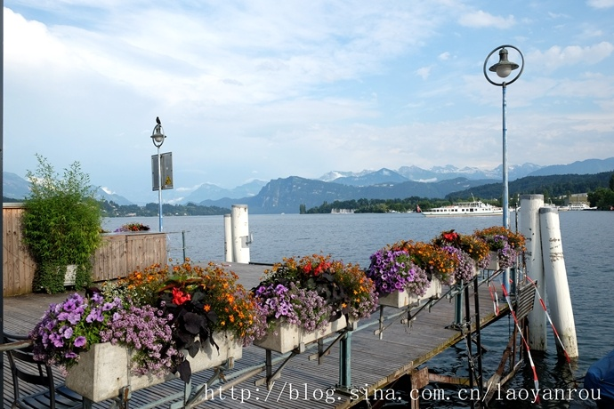
Day 2 米兰——卢塞恩
由于出国前便在意大利铁路官网购买了米兰往返卢塞恩的9欧特价优惠车票并提前打印了出来，所以除了早上从IBIS酒店出来走了十来二十分钟找到仿若古典宫殿般的米兰中央火车站、又花了一点时间确认出发站台以外，基本没费什么周折便搭上了开往瑞士卢塞恩的跨国列车。
一路非常顺利，火车速度基本相当于国内动车的水平，即便是通过意大利与瑞士边境时也仅是停留了几分钟，没遇到任何边检查验护照和签证，足见欧洲申根国之间自由通行的便利性所在（但便利性同时也导致了诸如难民无序流动和非法分子跨境犯罪等社会问题，当然这是后话了）。车窗外的自然风光从意大利一进入瑞士便有了比较明显的变化，意大利伦巴第平原田园风光随着列车驶入山区逐渐切换为了瑞士崇山峻岭、森林密布、流瀑潺潺、各式鲜花木屋点缀其间的阿尔卑斯山区景象，着实赏心悦目。山间也星罗棋布散落着一些墨绿色的小湖泊，湖边往往坐落着几个宁谧安静的小镇，山水一色，水长草飞，引得不少背包客下车在此流连忘返。倘若还有下次来瑞士的机会，我想我们肯定会找个类似桃花源的湖边小镇好好休闲几天叹叹世界的。
当然此行最主要还是冲着号称瑞士最美城市-卢塞恩去的，经过三个多小时的风光大片似的瑞士火车之旅我们终于抵达了目的地。可惜天公不作美我们初来乍到便给了一个下马威，一下车还没出车站便大雨滂沱，即便卢塞恩城市不大，火车站和入住的酒店也就隔着一条罗伊斯河相距不到几百米，可我们就是望天兴叹无可奈何，等了差不多半个小时不见消停的迹象，为了确保后续行程不受影响只好把心一横，扯了几个大塑料袋把行李箱简单一套便打着伞冲到了雨势渐小的街上。
然而当我们一身水一脚泥寒气攻心地赶到酒店时却迎面感受到了瑞士人的待客热度，前台接待的瑞士大妈非常热情的招呼我们办理入住并详细给我们讲解卢塞恩的旅游景点和注意事项，出国在外人生地不熟享受到如此周到的接待着实让我们差点感激涕零了。酒店房间虽然不大，但也布置下了一张双人床和一张单人床，而且相当精致整洁干净，窗外虽然不是对着奔流不息的罗伊斯河但对着城里行人寥寥的小径也是别有一番安静。
正在纠结下午怎么继续行程的时候，老天开眼雨停了，不但停雨甚至还露出了久违的阳光，这里的天气真是小孩子的脸说变就变啊。我们二话不说赶紧出发，趁着好天好好欣赏一下雨后天晴的卢塞恩，第一站就去酒店背后的穆塞格老城墙，这段建于14世纪的仅残存900多米的卢塞恩老城的城墙静静伫立在晴空下，石头灰浆砌成的墙体蜿蜒在老城绿草茵茵的小山坡上，9座塔楼如长城烽火台似的依次排开，3座对游人开放其中一座赞特塔楼里面存放着卢塞恩最古老的优先一分钟报时特权的大钟，从城墙和塔楼上可以看卢塞恩非常漂亮的全景，近处的小城教堂、顶着红灰鱼鳞瓦片的老城民居鳞次栉比、不远处的现代风格的火车站和再远处掩映在群山间宽阔清澈的卢塞恩湖相映成趣。
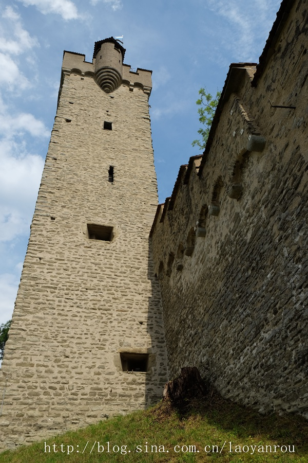
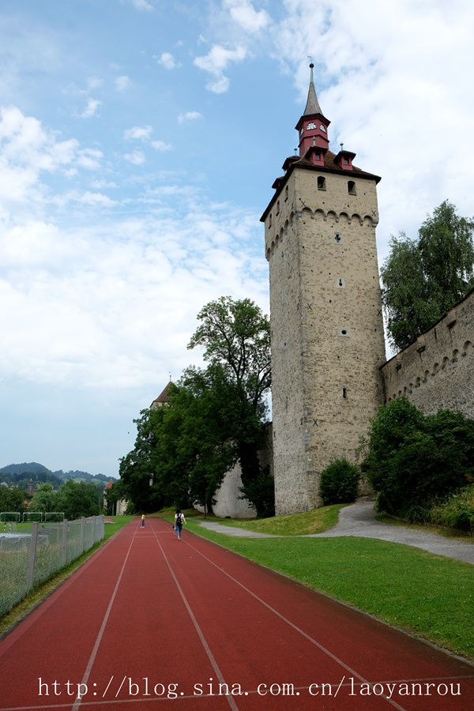
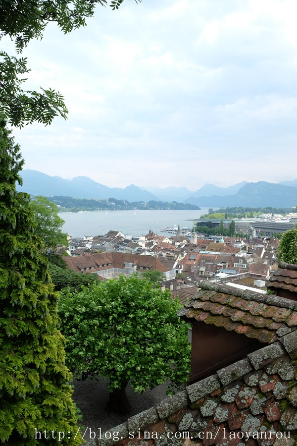
从穆塞格城墙下了山坡便是卢塞恩的主要几条街道，天气晴好后时不时零星的太阳雨并没有阻挡游人逛街的心情，街上陆续开始熙熙攘攘了，但所谓熙攘也完全不能和国内风景区的人头攒动相提并论。为了尽量在有限时间内趁着天气好把卢塞恩城内的主要景点看完，我们目不转睛穿街走巷来到了被马克吐温誉为“世界上最哀伤、最感人的”狮子纪念碑（又称为“濒死的狮子”），所谓纪念碑其实是在一座石头峭壁的底部位置掏出一个浅凹穴，里面雕刻了一只背上插着断箭、头边枕着瑞士盾牌的濒临死亡的雄狮，以纪念十八世纪法国大革命中为保护法王路易十六而献身的786名瑞士雇佣军士兵（当中有不少是卢塞恩人），表彰他们的坚贞不二和忠于职守，迄今代表瑞士精神的瑞士卫队仍被罗马梵蒂冈教皇聘用为御用卫队。而忠诚可靠、信守承诺也已成为了瑞士卫队、瑞士银行、瑞士制造甚至瑞士人本身所引以为豪的民族精神精髓。
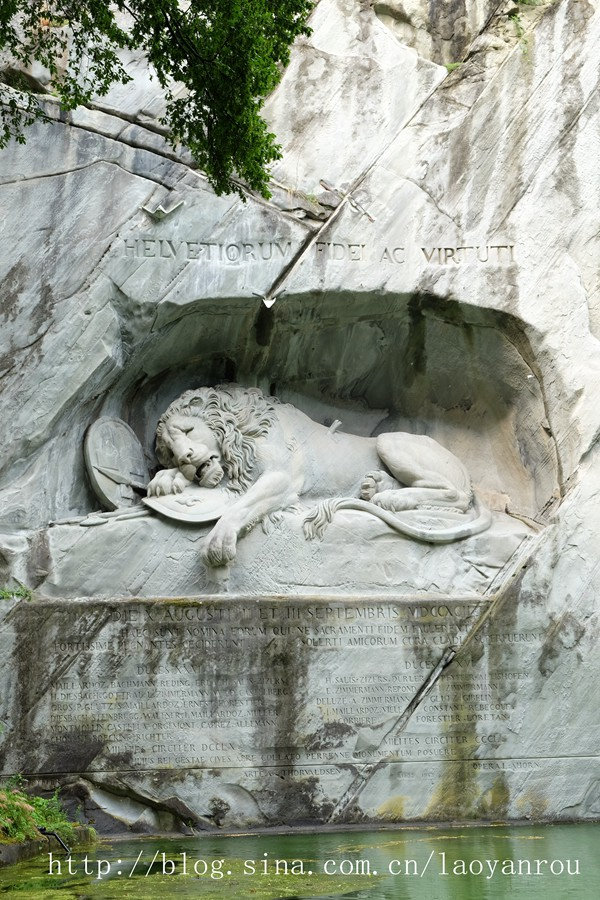
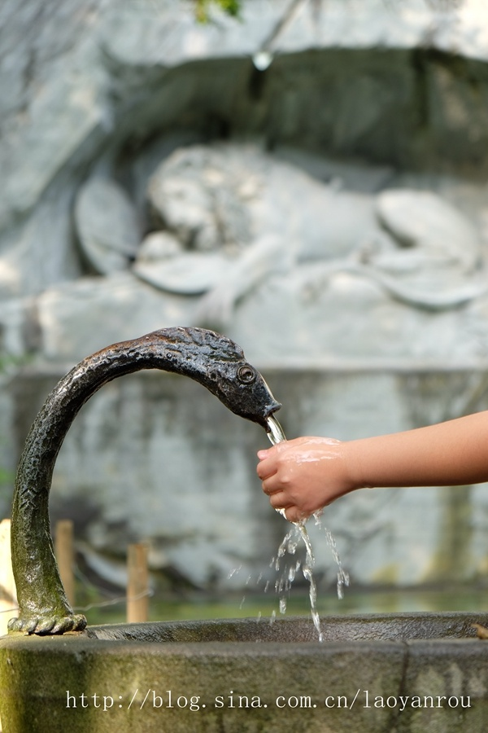
离狮子纪念碑不远就是卢塞恩冰川遗址博物馆，由于入馆的时候已经将近下午闭馆了，因此我们只能粗略浏览了一圈但却也有所收获，博物馆里面林林总总地布满了冰川时代的大自然雕刻师在卢塞恩留下的各种鬼斧神工之作，比如地面岩石被冰川回旋冲刷成内壁一轮轮的凹穴以及凹穴里面一个个被翻滚打磨得圆溜溜的大小不一的石球，令人对大自然的神奇力量叹为观止。冰川遗址博物馆除了保护冰川时代的遗迹以外，还在遗址旁边的一栋阿尔卑斯风格大木屋里建了一座小型的卢塞恩民俗博物馆，这里陈列的流光溢彩的木制家具和雍容华贵的家居摆设仿佛将我们一下带回到几百年前那个瑞士贵族阶层叱咤风云的那个时代，也使人不由得概叹瑞士人对生活品质的要求如同对待瑞士手表和军刀一样一丝不苟、精益求精。
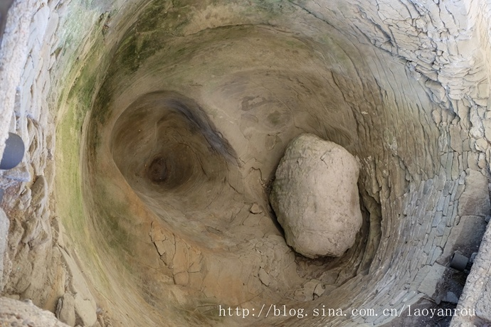
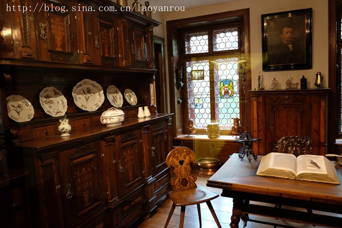
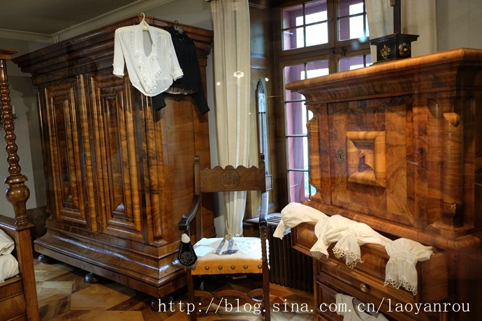
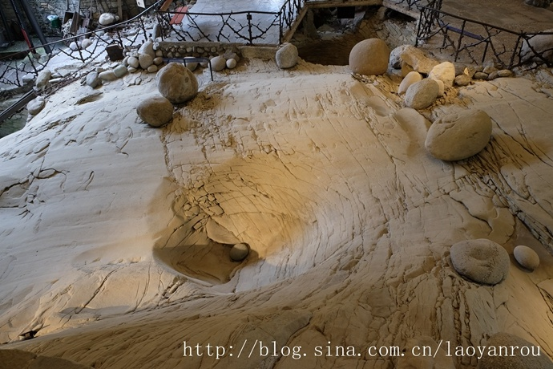
欧洲夏天的夜晚降临较晚，尽管博物馆已经闭馆但外面依然天色明亮，虽然大家舟车劳顿加上赶景点已疲态尽显，但为了不辜负好天气我们还是决定一鼓作气把城里的其他景点尽量都看完，事实证明我们的想法极其英明，因为接下来的两天里太阳老兄基本都没给过我们多久的好脸色。卢塞恩的另一处必去景点还有号称欧洲最古老的有顶木桥-卡佩尔木桥，这座建于公元14世纪的廊桥和桥上陈放战时纪念品的水塔在经历了七百年的风风雨雨和部分烧毁重建后依然横亘在罗伊斯河的两岸，廊桥横眉上描绘的120多幅描绘当时黑死病流行情景的宗教画一路引着我们从桥的这头走到桥的那头，仿佛穿越了一个时间流动的历史长廊，莫名地感到一种中古情怀油然而生。拼着最后一点体力我们还到了小城的宗教中心霍夫教堂到此一游，转过教堂后面的墓地时候钟楼礼拜的钟声响起，袅袅不绝，回荡在老城四周溢出到不远处的卢塞恩湖面上，那里游船如鲫，花红草绿，碧波荡漾，雪山皑皑，好一派瑞士老城风光！
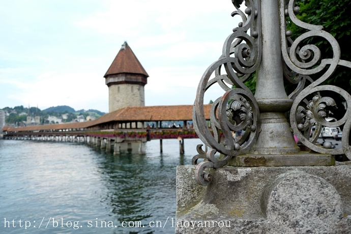
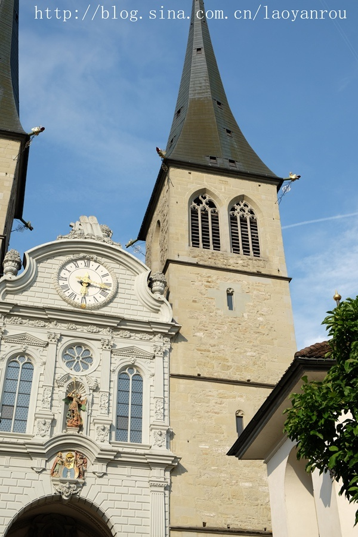

累了一天我们在火车站地下一层的COOP超市买了半只烧鸡和几个本地大蘑菇好好犒劳下自己，说真的瑞士的山货蘑菇味道那可真叫一绝，清水加盐用电饭锅一煮，完全不用其他调味品便清香四溢，鲜甜欲滴。尝到甜头的我们几乎每晚都要买几个价格不菲的蘑菇大快朵颐一顿，甚至坐车回米兰之前都要顺手买上几个解馋。
吃饱喝足的我们疲惫全无，晚上还顺着罗伊斯河两岸散了一圈步，夜色下的卢塞恩在马灯的点缀下也别有一番风情，滔滔的罗伊斯河水穿城而过，波光粼粼，水声隆隆。两岸的人们三五成群要么享受晚餐、要么品尝咖啡，河边的情侣们相依而坐细细体味着小城的夜之浪漫。 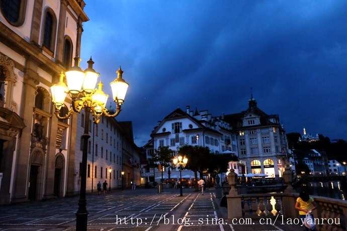 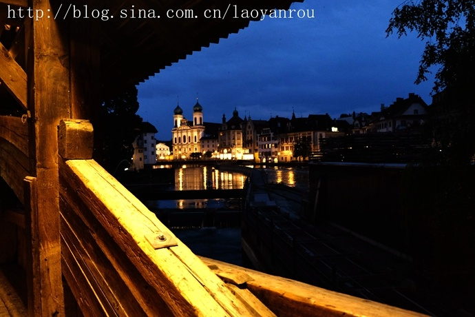